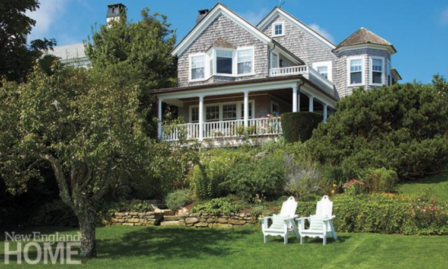
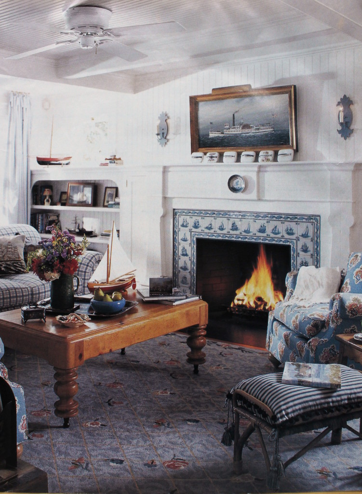

.png)
.PNG)
.PNG)
.PNG)
.PNG)
.PNG)
.JPG)
.JPG)
.PNG)
.PNG)


source
Happy Martha’s Vineyard Week again! First things first…I MUST say thank you to all my wonderful long time readers and all the delightful new readers from the Friends of Susan Branch Facebook page who hopped on the Susan Branch post! I loved all of your comments (especially those from my longtime readers who assured me they would not abandon me for Susan Branch! 🙂 ) Wow at the number of people who adore Susan’s work! So thank you for reading and commenting. (I hope Susan sees it so she knows how very loved she truly is!)
Now to today’s topic of conversation… Have you ever looked at something and gotten that deja vu feeling that you know it from somewhere? Well that happened to me the other day when I saw this room in New England Home magazine….
I thought…
I know that tiled fireplace..that picture..but from where?
And then I remembered.
It was this room…

The fireplace tiles were the giveaway. 🙂
It was in a magazine article I had saved from Country Style magazine waaaay back in 1998! (Do they even publish that anymore??)

I took pictures of the photos in the article to show you so that we can compare how it looked then with how it looks now. You can see the floral rug has been replaced by a zebra one layered over a sisal rug, and the floral and plaid upholstery has been replaced by a white slipcovered sofa and chair…a much more contemporary look.
The house is located on Martha’s Vineyard in Edgartown. The photo at the top of the page is how it looks now. Here is how it looked back in 1998 when Wynn and Catherine Newhouse owned it.
Not much different, right? They must have left the decorative adirondacks with the house when it sold (along with the artwork over the fireplace in the living room. 🙂 ) When it was purchased by the Newhouse couple in 1989, the 1910 home was very plain – with no interesting architectural details (but it was wonderfully located overlooking the Edgartown harbor!)
They hired one of my favorite designers, Betsy Speert, to redo all the interiors. (Betsy has a great blog here. She is quite hilarious and holds nothing back!! I featured one of my all time favorite kitchens that she designed here.) Okay…now where were we? Oh yes, the Martha’s Vineyard house! Betsy said that a summerhouse should be lighthearted, so she began to make it just that. 🙂 She used colors from the sea and nautical accents. Here is the lovely kitchen she designed with its yellow walls accented with loads of bright white trim. (Remember this is my enlarged photograph of an old magazine photograph so the quality is very poor.)
The new owners, Hilary and Damien Breier, are young and have two children and a dog. The hired Parker Rogers to redo the interiors for them – making it more fitting for a young couple today. Rodgers added a few things to the kitchen (refrigerator drawers, some cabinets, and a built in refrigerator) and repainted it in a chocolate brown so that the trim would stand out more.
Here is a sink in the kitchen today. What a gorgeous countertop!
The dining room back in 1998 was bright blue and white with an interesting light over the table. It has a perfect view of the harbor from the windows there.
For the Breier home, Rodgers kept the wall paneling but added a boldly patterned blue and white wallpaper above it.
This angled window seat was one of my favorite features in the house.
The new owners also used blue in the upholstery there, and they smartly added a table.
The master bath seems to have undergone the most changes. When the Newhouses lived in the home, it had to be able to accommodate a wheelchair. So the sink was designed with that in mind.
When Parker Rodgers updated the space, he removed the wallpaper, replaced the flooring, and added built in cabinetry.
This is how the Newhouse master bedroom looked 17 years ago.
Unfortunately, the new magazine did not feature the current master bedroom, but we can see how the daughter’s room looks with its lavender walls and drapes.
The new issue also does not show the staircase. In the previous style, the owners had a sky with clouds painted on the ceiling above the stairs. I do not know if the new owners kept that feature. (I hope so. 🙂 )
And the old issue does not show this sitting area in the family room. I love the arrangement of botanicals wrapped around the corner! 🙂
But both magazine articles show the marvelous porch with its amazing view of the harbor.
Here is the 1998 version…
and now a look at a corner of the current porch with what looks like the same wicker chairs.
Wouldn’t it be amazing to be sitting at that table watching the boats out on the water?!
Well dear readers, that wraps up our look at a beautiful house on Martha’s Vineyard. I think I could be happy living in that house no matter how it is decorated! I hope you enjoyed the tour(s) and that you haven’t forgotten about our little giveaway here (3 lovely Susan Branch books and a $25 Amazon gift card! 🙂 )
You can read the details on entering the giveaway at the bottom of the post here, or you can take a look at the gist of it below…
To enter, leave a comment on talkofthehouse.com (not a reply on your email delivered post please) on any or all of the posts that publish between 7/13/2015 and midnight on Sunday 7/19/2015…only one comment per post please. I’ll do a random drawing from all the names and announce the winner in the next post after Sunday.
Good luck to you!


.PNG)
I love the harbor views. Could sit there for hours.
Just catching up on your post I have missed, enjoy your blog so much. My favorite in blog land.
Cindy
I love Susan Branch’s work! Thank you for showing us the pictures…simply beautiful!
You have such an amazing memory! The house is absolutely gorgeous. I love the cabinet they have in the bathroom – such great storage. Also, it’s my dream to own a kitchen sink like that one. Some day… 🙂
Lovely view and home.
About 5 years ago, we visited friends in Newport and they took us to Martha’s Vineyard for the day. We especially loved walking around Edgartown. The houses were so beautiful–most were white with black shutters and trim. All the neighborhoods looked so picturesque and coordinated. Fun to be able to see INSIDE one of these houses!
I’m glad to know I’m not the only one who clips and saves magazine articles forever (even after having to move the files when relocating). I had one of those “I recognize that” moments yesterday. I got some free greeting cards with one of the solicitations from a wildlife/conservancy group, and one of the cards was a watercolor of a garden scene with a twig chair against a white cottage wall with a charming window. I knew exactly what picture had inspired that painting and pulled it from my files. It was from a Southern Accents from years ago of a cottage garden in Cashiers (long before we had our mountain cabin). I still love it and the flowers in bloom are all the ones we have blooming now at the cabin. So nice to know that we can create what we envision even so many years hence. As for this charming home here, I would have adored everything about the original version at the time, but have toned down my style with the times. Yet I have to admit to loving the master bedroom and bath wallpaper though I probably wouldn’t have the courage to go all out like that. I like the current version, too, except the zebra rug! Interesting that the coffee table in the original living room is in the current family room, and that carved sailor sculpture (whatever it is) remains on the wall near the bay window. Did they keep some of the furnishings, then? Thanks again for the opportunity to win the Susan Branch give-away.
Loved the hotel featured on Martha”s Vineyard-I can just imagine sitting on that lovely porch and relaxing looking out over the water, What a beautiful setting.
What a beautiful Hotel. I would love to visit Martha’s Vineyard!
Oh, to sit on this porch with a cup of tea and a good book, with its gorgeous view of the harbor! Afterwards, to curl up with a good book on the angled window seat inside. Thanks for letting us peek inside this wonderful MV home. What fun to find a new kindred spirit, Kelly! I just love visiting your blog! ♡
WOW! Thanks for the introduction to Susan Branch. I’ve seen her work but never paid attention. Beautiful post.
Ditto so many of the comments! What a lovely place, love SB and others and love all the places we get to see that many of us might not otherwise 🙂
Thank you!
What a beautiful home!! I am totally jealous !
(second attempt–my computer closed the last comment page unexpectedly!)
Wonderful comparison. Have been nostalgic lately and have been looking through my old decorating and recipe magazine clippings. By the way, maybe I missed this post, but how do you store your clippings (I keep mine in binders/sheet protectors) and try to edit periodically?
Love your blog. Many thanks for the chance to win the Susan Branch books.
What a beautiful home. Interesting to see the decorating styles evolve. Both charming and classic.
What a charmingly fun house.I had the same thing happen to me with a home in a magazine that I had clipped and saved some 30 years ago. Then I saw a room that sent me back looking for that article. It’s always interesting how things and places stay in ones mind. I still have fingers crossed for your Susan Branch giveaway. What a marvelous gal she is.
I love the before and years later photos of the rooms. I think I saw that issue years ago. It was so much fun to see the changes made to the rooms. Thank you for a fun post and another chance at the giveaway. I am a fan of Susan Branch too!
Oh how I wish I were there on Martha’s Vineyard right now. I would love to stroll over to Susan Branch’s home and have tea.
Thank you for the wonderful give away and your wonderful blog.
Dawn R.
What an awesome house, thanks for the before and afters. I like that the exterior stayed much the same, it’s SO New England! I like the updates, too, while staying true to the age and style of the home.
I share your love of the Vineyard and hope to go back one day soon. This is a great giveaway, I used to have Girlfriends but when my ‘then’ teenage daughter asked if she could cut pictures of it for a scrapbook I had to say yes!! Ha!
Jane x
Would love to own one of these Susan Branch Books. I was given the Christmas one years ago as a gift.
Wow, what a house! My favorite room was the dining room with the blue and white wallpaper above the wall paneling. I thought that was stunning!
Wow! You have a great memory…but then again, if you’re like me, you are a visual learner and don’t forget how things look. I might forget what I NEED to do, but not how a room (or anything for that matter) looks. This is a lovely home you shared, but I just love your home. It is always so warm and welcoming and impeccably decorated. Your little touches are so lovely…the gingham, the glass jars, the chalkboards and your lovely handwriting. You are an inspiration. Have a blessed and lovely day and rest of the week!
Kelly,
You have such a great memory! That is awesome that you remembered that article just from the fireplace tiles. I love to see how homes are maintained and updated. The new owners seemed to hang onto just the perfect amount of integrity while infusing their own style into this home. I would have to agree that the porch overlooking the water is my favorite place in the whole home. Thanks for sharing it with us! I think I saw Country Living on the rack at the grocery store just the other day. I will let you know.
Susan Branch is new to me and I’ll visit her site after this. I too have enjoyed Betsy Speert’s work and have saved some photos from old mags. I love the whimsy she adds–seems to be just enough and just the right touch.
Kelly,
Yes, I could handle waking up or retiring each evening to that gorgeous view. What a beautiful home! I love the crisp white with the contrasting natural or stained wood. And the serene blue is swoon worthy to me, not to mention the gorgeous carved wood of the bed in the master bedroom. No matter which decade of decor, I could handle spending time in this home! Thank you for an intriguing post!
Sherry
Love the before and afters…would love to live on the water.
Wow….that view and that house are simply stunning!
I love, love, love all the blue color. It will always be my favorite color to decorate with. What a beautiful house. Thanks for sharing.
Thank you for the tour!! I would love to win the books–thank you!!
I have to say that I much prefer the designs of Betsy Speert from 1998. It just felt cozier, and what I think of when I think of Martha’s Vineyard/New England. Not that the new designs aren’t nice too, and everyone has their own style. Loved seeing the old photographs, and I agree that the angled window seat is a gold star feature!
I have always admired the artwork of Susan Branch – thanks for sharing more about her on your blog.
Love your site, inspiring, fresh, genuine, your heart shows : )
Kelly,
I really like certain aspects of each version. I love the chocolate brown paint in contrast to the white cupboards and trim, but I like so many of the printed fabrics used in the living room in the earlier version. Neutral is good but when it’s a good print, who can complain? 🙂 Bottom line, I would love that view!
xo,
Karen
Loved the comparisons. I am impressed and pleased the new owners kept with the white woodwork and blue color. Beautiful home and fabulous views. Would be so pleased to win the Susan Branch’s books. I truly love reading your blog. I retired from teaching 1 year ago and love it. Hope you do too.
Love that house! It would be a dream to actually live there. Every bit of it is charming!
What a view from the porch! I enjoyed the comparison – I like some things from each era. Thanks for sharing with us!
Thank you for such an enjoyable post. I enjoyed seeing the before and after. Overall, I did definitely like the “before” better… glad to see that I’m not the only one. Is it possible to develop a personal style (kind of cottage/country) that is never “in style” as far as being the latest trend, but never really out of style either. That’s my decorating dream. Maybe that’s what you do in your home, Kelly. I’m sorry but I don’t keep up with the current styles, just know what I like… what makes my heart sing:) I definitely like your style, Kelly… and Susan Branch style too. Thanks again for the inspiration.
How I would love to visit Martha’s Vineyard some day! Until then, thank you for the lovely pictures!
My daycation to Perry proved to be a good choice. Every so often my sister and I climb in the truck and just go. Yesterday it was Perry. We toured Carroll Street, had a wonderful lunch at The Perfect Pear, met fantastic people, had the pleasure of meeting the wife of a promising candidate, toured some outlying areas of Perry even saw the beautiful landscape around Kathleen. On the way home we had dinner at Daphne Lodge, and I must say well worth the long wait I waited to eat there, ever since it was featured in Southern Living! “Pearing” back to The Perfect Pear three people told us we MUST eat their pimento cheese so we ordered a side. As we were devouring our delicious sandwiches the nice waitress placed a to-go box on our table saying “someone wanted you to have this”. Imagine our surprise! I am the one usually giving, don’t quite know how to graciously accept, so all I (we) could do was say a heart felt Thank You. Let me tell you those people were not wrong, The Perfect Pear pimento cheese is a MUST. By now I know you guessed it, pimento cheese was in our surprise to-go box. Don’t even get me started on the Krispy Kreme Bread Pudding.
Can’t wait for our next boondoggle to Cashiers to the Decorator’s Show House.
Have to say our daycation to Perrydise was as delightful as your blog.
Sandra
Such a cute house! I love it and the blue & white decor. I’m also glad I’m not the only one who saves things like magazines and pictures from them. Thanks for the wonderful tour.
I read Betsy Speert’s blog….so funny! Thanks for sharing this week and for the giveaway!
Fun comparison! Lovely house – It’s great to see it was just tweaked to fit the new owner’s style, not totally renovated. You have a great memory!
Beautiful pictures of Martha’s Vineyard . I have been there once but it left a lasting impression. Josie & Katrina did share a similar picture, Kathy.. I feel like I have taken a mini trip today.
DiAnne
What a beautiful house! Both time eras are decorated very nicely. I love that porch overlooking the water.
Lovely house. I seem to remember it from somewhere also, maybe Coastal Living? I used to subscribe to that.
Have to apologize for not subscribing to your blog, I usually just check blogs I read every day or so. But I will change that now that you are posting more often!
I have been following Susan Branch on her blog for a few years. Love her style, envy her life! I also love Mary Engelbreit, she has been a long time resident of St. Louis, where I grew up. I was obsessed with “life is a chair of bowlies” forever! Just makes me smile when I say it!
I would love to have Susan’s books. I just don’t buy books very often, I ask for them as gifts, since no one knows what to get me anymore. But sometimes they decide to get other things, so I keep asking!
Susan hasn’t posted since 6/5, guess she is terribly busy getting the book finalized, or just enjoying summer. But I keep checking every few days!
I am having deja vu that Katrina and Josie sent me a photo of themselves sitting in that yard in adirondack chairs at Martha’s Vineyard a few weeks ago. The only thing I was not jealous of is that they were wearing sweaters! Beautiful photos, Kelly! Even the old ones! What is not to love about this!
Thanks Kelly this post was lovely~my Aunt lived in a beauty on the cape that looked similar to this home. Just stunning 🙂
I love the blue and white look in decorating. Those fireplace tiles are wonderful.
What a fabulous home! Must say, you are my favorite blogger, I could spend houses looking at what you feature!
Love the white woodwork and love Susan Branch. Crossing my fingers for this one.
I love Susan Branch’s art. She has such a unique way of capturing child-like simplicity that only a few artist have. Thank you for all of the inspiration and the giveaway.
What a wonderful home. I would love cooking in that cheery yellow kitchen, wouldn’t you? Those last two pictures of the porch are so drool worthy. Who needs Calgon, when we have you Kelly! Thanks for more summer morning dreaming…..
Love it that you are doing this tour of Martha’s Vineyard! Thanks!
Both versions of the house are beautiful but I think I like the yellow in the kitchen better than the chocolate brown. I do like the butcher block counter tops.
A visit to Martha’s Vineyards is on my bucket list! I also enjoyed the post about Susan Branch. Love her work.
Beautiful home…both now and then! I could live in either one too…or a combination. Love the old master bedroom! Thanks for the tour! 😉
I love this home and I love Betsy Speert….her blog is great and she is too funny! I really prefer Betsy’s version of this house….. it is warm and looks like it belongs on Martha’s vineyard. I just don’t think trendy is always better!
Great post as always Kelly….thank you! Hope to see more!
Wow! You hit it out of the park again! Superb post. I actually like the first living room with the patterned rug better. I would do a white sofa instead of the plaid however, but that would be all the updating I would like. Then I see it was decorated by Betsy and it’s like, OF COURSE. I love her style so much. I heard she has a new book coming out?
I totally agree with you. I would love living in that house regardless of how it was decorated. The windows, built-ins, the views of the water, and that porch would make me happy.
I did get a chance to hop over to Susan Branch’s website, and it is amazing what she has done. She is very gifted.
Wonderful article. LOVE that coffee table!
Beautiful house – not sure which version I like better – maybe a little bit of both. My brother lived on Nantucket for years, but we never made it to visit Martha’s Vinyard when we visited.
I’ve been to Martha’s Vineyard once. I just loved riding around looking at all the beautiful homes. What a treat to actually see the inside of one the homes! Thanks!
Love this house. Oh how I could dream about living in that one. On my bucket list to visit Martha’s Vineyard!!
Such fun to have you share before and afters of this home on Martha’s Vineyard. Thank you for sharing your love and appreciation of what others have done in their homes! (I like Jan’s idea of adding a visit there to my bucket list…now, I need to make a bucket list!) 🙂
I love the before and afters. That is great that you remembered it from your old magazine stash. I didn’t think anyone else kept pages from a magazine like that. I have files of them myself:)
Great post.
There is so much about the East coast that I love and your pics confirm that, that I don’t think I could ever be a west coast gal.
Love it!! Soo beautifully done!!
You have such a good eye, as well as a good memory! It was fun seeing how that beautiful home was updated over the years. Martha’s Vineyard will always remain a special place in my heart, as we celebrated our honeymoon and tenth anniversary there. Your blog is wonderful – I check it everyday! No chance of me abandoning it for any reason! 🙂
Love this post on Martha’s Vinyard. I have only been once but would live to go back. Susan Branch is one of my favorites! I traveled all through England with her book. Happy Summering!
Kelly,
What a beautiful home! The decorating is gorgeous. Would love to be able to visit Martha’s Vineyard someday. It’s on my bucket list. Maybe someday.
It is so much fun to look at all the before and after photos. Thanks for sharing!
What a beautiful home….in any era!!! not sure if it’s the home or the home’s location that makes it so beautiful…Thanks for sharing!
I too prefer some of the features in the older house pics. Love yellow kitchens.
How in the world did you remember a magazine article from almost 20 years ago and then actually find that article in your stash! So glad you did — this was charming. Love thinking about having morning coffee on that porch. Thank you!
Love the photos from Martha’s Vineyard….especially all of the touches of blue & white! Also love Susan Branch books….would love to add these to my collection!
Blessings,
Lanita
Such a charming home now and then! I especially love the way the botanicals wrap around the corner!
Liked the old so much better…. more fitting for an old Martha’s Vineyard house…the new should be in a New York apartment…what were they thinking???
This is a lovely home, even the older version. I also have some of Susan Branch’s books and love love love her recipes and illustrations. Would love to add to my collection. Thank you so much for showing us this lovely home Kelly!
I love the Martha’s Vineyard house. So beautiful and I love that porch!
Have always loved Susan Branch. Love, love, love your blog and pictures.
Love your blog! I visited Martha’s Vineyard 18 years ago and fell in love with it. Unfortunately I have not been able to return to this beautiful part of the United State , I am enjoying your post on the Vineyard.
Just lovely— enjoyed seeing the past and the new facelift of this beautiful Vineyard home. The white paint and lighter updates just makes it feel light and airy— as an island beauty should be for today’s family. As I did some research on MV, I enjoyed reading about the history and the present. I daydreamed about going there and thought about my favorite childhood books my first grade teacher read to us–The Bobbsey Twins at the Seashore came to mind. Since it is going to be a rainy day at the beach today, I will enjoy going back and checking all the links. Thank you for a perfect post as I hum “In the Good Old Summer Time!! 🙂
Waking up with a post from Talk of the House about Martha’s Vineyard….great way to start my day! Love this house, both versions are lovely. I do love the yellow kitchen better than the newer version. I knew you would have lots of comments about Susan Branch, she’s a gem and makes me smile. I also love Marjolen Bastin, their works both have a lovely,simple, whimsical style.
Love the kitchen! Magazines, love em! Beautiful home, and the view!
Beautiful! Chocolate brown walls! Wait — what? Oh, I already knew brown was back, because IKEA has a bunch of brown couches. I used to sell Susan Branch books + greeting cards in my late, great retail store, Heart-in-Hand. She’s so adorable!
I must be getting old -because I liked the before and afters of this house.
Love the Susan Branch books. I have several in my collection and would love to add more! Her illustrations are wonderful and just make you happy when you open every book. Thanks for the offer as well as the wonderful tour of Martha’s Vineyard. One of my most wonderful vacations many years ago.
Beautiful house with a wonderful location. So awesome to see that the house with the beforehand and afters. Another bit of Martha’s Vineyard . I would love to visit in person one day, but until then I’m glad there are bloggers like you to share it with us.